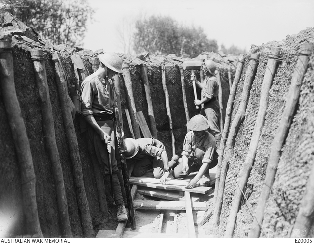

A real family story
Read about Harold Philip Josias Truasheim, from Fernvale in Queensland.
Year 3 · Remembering, listening, caring
One family’s story. A time to remember. A chance to think about peace.
Harold’s grandchildren remember the sound of his bugle. Read his story. Find out why people remember on 11 November. Then choose how you would like to respond.
Start Harold’s story → Start with Remembrance DayRead about Harold Philip Josias Truasheim, from Fernvale in Queensland.
Ask what a story, photograph or written record can tell us.
Draw, write, listen, talk or sit quietly. You can choose.
Teacher? Begin with the 30–45 minute lesson guide. Learning focus: explain one remembrance custom, ask a question about evidence, and respond with care.
The story of Harold Philip Josias Truasheim, told by Robin McKean. These are the family’s words and recollections, not a checked military service record.
Harold Philip Josias Truasheim was just 18 in 1916 when he signed up for the war. He grew up in Fernvale, Queensland. By the time the war started, he already knew how to work hard.
Before the war, Harold worked as a butcher’s boy in Fernvale to help his family. His dad had died when Harold was only eight, and he was a big help for his Mum.
He wrapped meat, swept the floor, and learned to use a knife carefully. By the time he was fourteen, he had left school and was already earning his living.
Harold walked into a recruiting office in Brisbane and signed up. He had only just turned 18, and he was shorter than many of the other men. The officers looked at him and weren’t sure he would be strong enough for the usual soldier jobs, but they took him anyway.
He sailed from Brisbane on the troopship HMAT Boonah. The men went first to Egypt, where the 4th Pioneer Battalion was being formed. They trained in the heat and dust.
The battalion needed someone to play the bugle. One day in camp an officer asked if anyone could play. Young Harold said he could. The officer handed him a bugle and told him to show what he could do.
Harold put it to his lips and blew one clear, steady note. Then he tried a few of the calls. The officer listened and nodded. Harold got the job. He became a bugler for the battalion.
Later the battalion went to France. In winter the trenches were deep with mud. Cold water filled the bottom and the men stood in it for hours. Sometimes snow fell and lay on the frozen mud. The wind was sharp and hands went numb.
When they were resting or in a quiet part of the trenches, Harold still sounded the bugle. He played for mealtimes, for the mail, and for the “all clear.” One clear note carried along the trench and told the men what to do next. They listened for it even when their feet were cold and the walls of the trench were high and wet around them. Harold was very brave.
Harold was wounded in France. He was sent home. He kept the bugle.
Years later, at his beach house in Beachmere, Harold would still take out the bugle. He blew one clear note from the balcony so the grandchildren would come running in from the beach.
Today, when someone hears a bugle on Anzac Day or Remembrance Day, someone in the family thinks of the boy from Fernvale.
Does your family have a way of remembering someone who served? You can also think about the story instead of sharing a personal memory.
Lest we forget
Last Post at the Australian War Memorial ↗Opens the Memorial’s listening page. Ask an adult to help, or choose a quiet reflection.
Explore our optional sound examples →What did Harold do before the war? How was the bugle part of his family’s life later? Which detail would you like to learn more about?
Remembrance Day is a time to remember people who died or suffered in wars and armed conflicts. It is not a celebration of war.
At 11 am, fighting stopped on the Western Front in Europe. An armistice is an agreement to stop fighting.
This did not mean that every war everywhere had ended.
In Australia, people are encouraged to observe one minute’s silence at 11 am on 11 November. We can think of people who died or suffered.
Our class can join in quietly or choose another respectful way to reflect.
Red poppies grew on damaged battlefields in northern France and Belgium. People began using the poppy as a symbol of remembrance.
A symbol is something that stands for an idea. Here, the idea is remembering.
Sources: AWM: Origins of Remembrance Day ↗ · AWM: Flanders poppies ↗
As we think about war, we can ask about people who served and about families and civilians. A civilian is someone who is not a member of the armed forces.
Imagine waiting for news of someone you love. What could help a family feel cared for? You do not need to share a personal experience to answer.
Think about peace: How could we help someone feel safe and included in our classroom today?
In Harold’s family story, the bugle called people together. Explore a few notes, then describe what you hear.
Start with your volume low. These are computer-synthesised bugle-style notes. They are not Harold’s bugle, authentic military calls, or the Last Post.
Nothing plays until you press a sound button.
Which note is higher? Could you tap a pattern gently on your knee? If you prefer not to listen, draw a line to show a steady sound.
The Last Post is a particular bugle call used at remembrance ceremonies. It is not just any set of bugle notes.
Listen to the Last Post at the Australian War Memorial ↗
Opens an external listening page in a new tab. Ask an adult to help. No sound from that website is copied into this resource.
Listening question: when does the sound become softer? You can also choose a quiet reflection without music.
Open a word, read its meaning, then try saying it in your own words.
A person who plays a bugle, a brass instrument used to sound calls.
In this military story, a soldier whose work could include building trenches, dugouts and bridges. This word has other meanings in other stories.
A large organised group of soldiers.
An agreement to stop fighting. It is not the same as a lasting peace agreement.
The act of remembering people or events.
To remember and show respect for a person or an important event.
Someone who is not a member of the armed forces.
Information we use to support an idea about what happened.
A long, narrow ditch. Soldiers used trenches for shelter and movement during the war.
The area of fighting in western Europe, mainly in France and Belgium, during the First World War.
Child-friendly word explanations. Military context: AWM: Pioneer battalions ↗ · AWM: The Last Post ↗. Other words use their ordinary classroom meanings.
There is no score and no race. Read, think, choose, and try again. Your answers are not saved or sent anywhere.
Choose a number for each event: 1 is earliest and 3 is latest.
Use the story to help you.
Word help is there if you need it.
“He blew one clear note from the balcony so the grandchildren would come running in from the beach.”
Source: Robin McKean’s supplied family story. This tells us how the family remembers Harold’s bugle.
Wonder: Who could we ask about this memory? What else might help us learn about it?
A service record might help check dates and units. We have not checked Harold’s complete service record for this resource.
The supplied document includes a caption saying he joined on 13 January 1916. Treat that as a claim to check, not a record we have verified here.

Notice: Name two things you can actually see. Wonder: What do you want to ask?
The museum identifies these men as Australian pioneers. This is not identified as a photograph of Harold. It cannot prove that he was here or tell us what he was thinking.
Draw an object or place that helps someone remember. It may be imaginary or from a story. Label it.
Sentence starter: “This helps someone remember because…”
Write two sentences about why remembering people matters. Add one question you still have.
“I learned…”
“I wonder…”
Plan one small action that could help someone feel welcome or safe. Explain why you chose it.
“Today I can…”
You can remember someone, think about people affected by war, or hope for peace. You do not need to tell anyone a private family story.
At a school ceremony, ask your teacher how you can take part comfortably. You do not have to pray, speak, or share personal information to show respect.
Start only if you want to. There is no alarm, music or sudden sound. You may stop at any time. This is a classroom reflection, not a timed official ceremony.
Ready when you are.
There is no countdown to watch. Breathe normally. Notice your feet on the floor.
Finish one sentence aloud, on paper, with a drawing, or just in your mind.
“I can remember with care by…”
“One question I still have is…”
“A peaceful classroom looks like…”
My Granddad was a Bugler: The Story of Harold Philip Josias Truasheim, Robin McKean, 2026. Supplied by the author as a Year 3 document. The six story pages retain the narrative from the supplied app. No new combat or family events have been added.
The story contains family recollections and narrative scenes. We have not independently checked Harold’s age, journey, unit, injury or the remembered conversations against his service record. Dialogue and scenes are not presented as official transcripts.
The original family document and generated download are kept privately, not offered as public downloads. No AI illustrations are used.
Official pages checked 7 November 2026 (Australia/Perth). External sites may change and may show material intended for older readers; use them with an adult.
Which records confirm each family detail? Who first told the beach memory? We can enjoy a family story and still ask careful questions. Not knowing yet is part of learning history.
Privacy: answers stay on paper or in conversation. The site does not collect names, stories or responses. Activity choices reset when the page reloads.